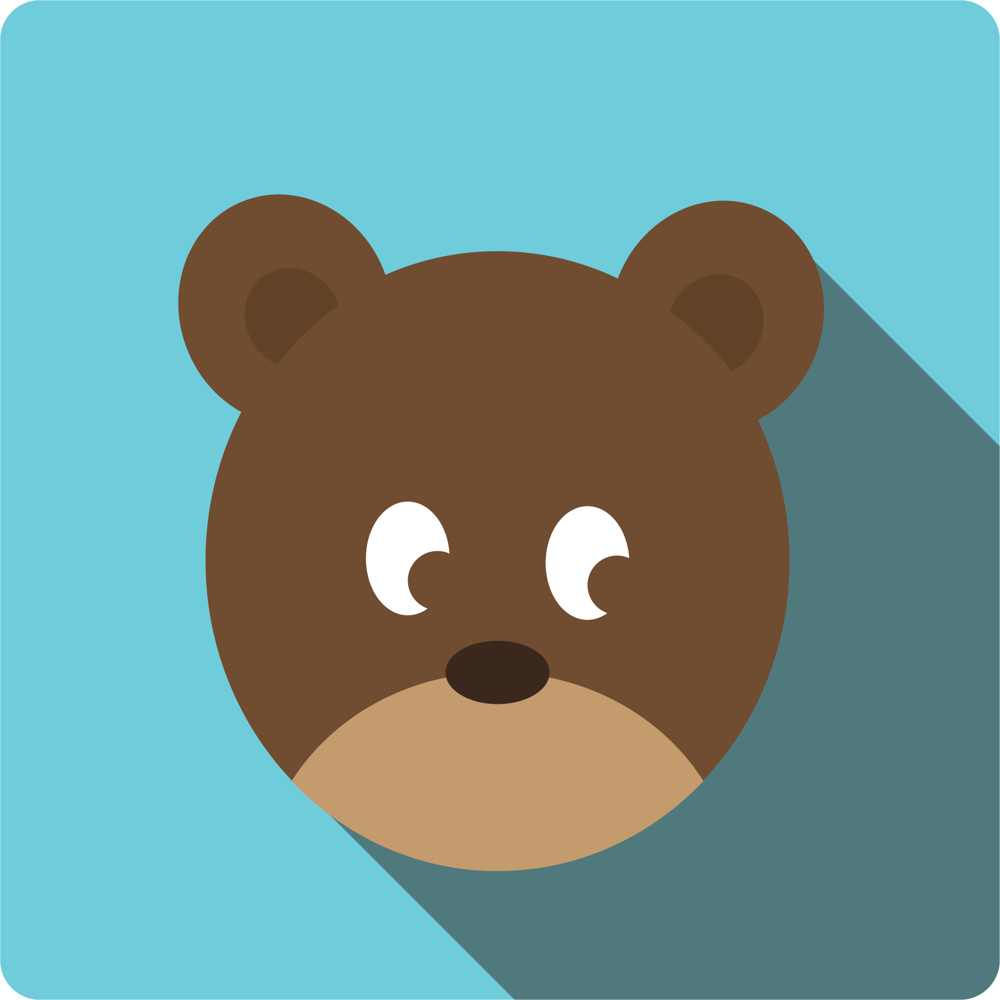
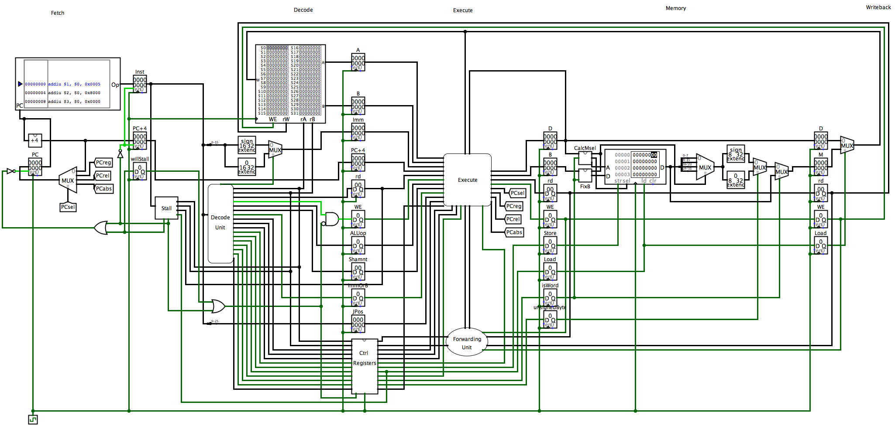

PeerPlus
 Most recently I've been involved in the development of the iOS app for the social network startup PeerPlus. If you're sick of eating alone, not finding enough people to go to a party, or just had trouble finding people to do activities—then PeerPlus is your solution. PeerPlus allows you to anonymously share statuses of what you're doing or would like to do, then connects you to other users nearby to join you instantly. Within minutes you'll have a group of people ready to watch The Shawshank Redemption or to play that pickup ultimate Frisbee game! I was the sole developer of this app, converting every view from mockups to functioning screens. I used a lot of APIs and frameworks to help with the development, like Parse for much of the back-end.
PeerPlus is still in the testing phase, so you can't find it on the app store yet—but it's scheduled to launch by the start of the Spring 2016 semester!
Belle Delivery
Belle Delivery is a peer-to-peer food delivery service that anyone can easily use. It matches hungry users to people already shopping near the store they want. For example, do you want Chipotle but are too lazy to go? Just open up the Belle app and place an order for that Carnitas Burrito. Deliverers shopping at or near Chipotle will be notified of the order and one will grab the burrito and deliver it to you! You are happy because you now have Chipotle, and the deliverer is happy because she received a delivery fee for little effort on her part! I worked on a team of two to build Belle's iOS app from the ground up.
Belle recently launched! You can download the app "Belle Delivery"
on the app store now or go to
our website and start getting nearly any food in Ithaca delivered!
Jammin' with Jen
Jamberry Nails is a nail wraps company that sells a wide variety of easily-to-apply, do-it-yourself wraps. Many independent consultants host Jamberry wrap parties to sell product for commission, and have their own section of the company website that customers can shop from so that Jamberry knows who sold the particular wraps. I developed an iOS application for an independent consultant to facilitate her overall job. The app allows customers to shop, join Jamberry, and host parties. They can also request a free sample, view a tutorial of how to apply the wraps, and view frequently asked questions about Jamberry.
Jammin' with Jen can be found
on the app store!
Multi-core Network Honeypot
As a final project for my "Computer Systems Organization and Programming" class during the Spring 2015 semester, I collaborated with a peer to construct a network honeypot. The system that receives packets from a network device, analyzes and classifies those packets, and tracks various statistics over time. The system will employ a concurrency-safe datastructure to capitalize on the simulated multi-core MIPS processor, will have a simple interactive user interface to allow the statistics to be displayed to the user, and a way to control the system over the network. The system can withstand speeds of up to 10Mbps without dropping packets.
MIPS Processor
 Another project I completed in "Computer Systems Organization and Programming" was a five-stage pipelined processor. The processor performs a large subset of instructions in the MIPS assembly language. The five stages of the circuit are: Instruction Fetch, Instruction Decode, Execute, Memory, and Write back. Between each stage is a set of registers that stores certain values calculated by previous stages and needed in future stages. Since there are five stages in this processor, five different instructions can be processed in parallel. It employs data forwarding to prevent data hazards, strategic stalling to prevent control hazards, and there is a single clock connected to every register in the circuit. The circuit was made using the simulation software Logisim.
If you're interested in learning more about this project, my partner and I wrote an in depth paper documenting its design. You can read it
here!
Jumpy Man
First there was Flappy Bird. Then came Crossy Road. Now there's Jumpy Man. Jumpy Man is a personal project of mine, and it's an endless arcade game for iOS. The game involves an animated man jumping over obstacles to survive as long as possible. Along the way you can collect powerups to stay alive even longer! There is also a menu page to greet the user, a settings page to customize preferences, and a store to unlock powerups (the currency is the number of obstacles you've jumped over). All of the art in this game was drawn in a Photoshop-esque app by yours truly.
Jumpy Man is not quite finished, so it's unfortunately not on the app store yet. But I expect to finish it this winter and have it available for your gaming pleasure!